Год назад контент-завод выглядел так: один шаблон, один фон, меняется только текст. Сотня одинаковых каруселей подряд, и через неделю аудитория пролистывает их, не глядя.
Сегодня ИИ делает разные слайды, меняет оформление под каждый пост, встраивает движение и анимацию. А в Америке вымышленная ИИ-бабушка за первые недели собрала миллион подписчиков в Instagram. Реального человека за ней нет.
Я сама собираю контент-заводы для себя и для клиентов: около 420 единиц контента в месяц на пять площадок. В статье расскажу, что умеет контент-завод сегодня, где его честный предел, сколько можно выкладывать без бана и сколько стоит завод под ключ.
Что такое контент-завод простыми словами и как он изменился за год
Контент-завод (его ещё называют контент-фабрикой) — это система для продвижения в соцсетях, которая каждый день сама делает и выкладывает контент во все ваши соцсети. Карусели, рилс, ветки в Threads, посты в Telegram и Pinterest. Вы не сидите ночами над контент-планом и не выкладываете посты руками.
Ещё год назад это были однообразные шаблоны: менялся только текст, а дизайн, шрифты и подача оставались прежними. Сегодня ИИ умеет и оформление, и интерактив. Можно делать совершенно разные слайды, менять визуал под тему, встраивать эффект движения и анимацию.
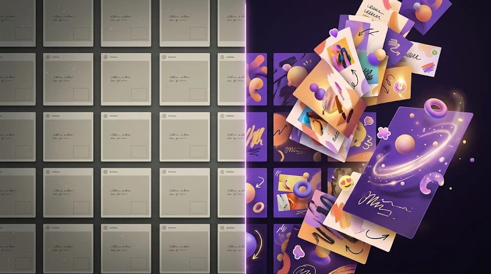
Зачем всё это? Внимание и удержание сейчас — одни из главных показателей для продвижения в соцсетях. Пост, который останавливает палец и держит до последнего слайда, площадка показывает дальше. Когда завод делает не шаблоны, а живое оформление с движением, шансы на такой результат сильно растут.
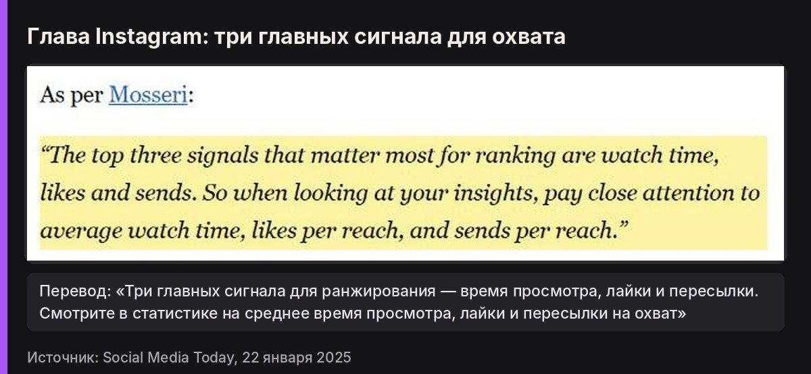
Зачем контент-завод эксперту и бренду
Главное, что даёт завод, — регулярность. Бывают дни, когда нет ни времени, ни настроения, и блог легко забросить на неделю. А потеря регулярности в итоге бьёт по продвижению. И для продвижения личного бренда эксперта, и для продвижения бизнеса в соцсетях это работает одинаково: кто выходит чаще, того и видят.
Поэтому я советую так: ведите контент сами, когда есть время и вдохновение. А рутину и дни, когда вы бы забили на блог, доверьте ИИ.
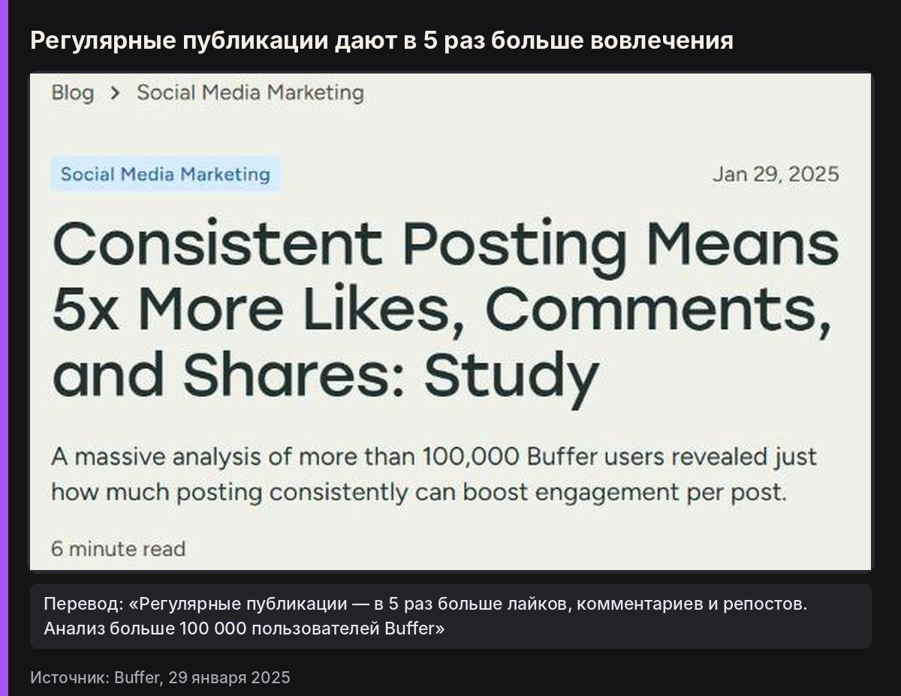
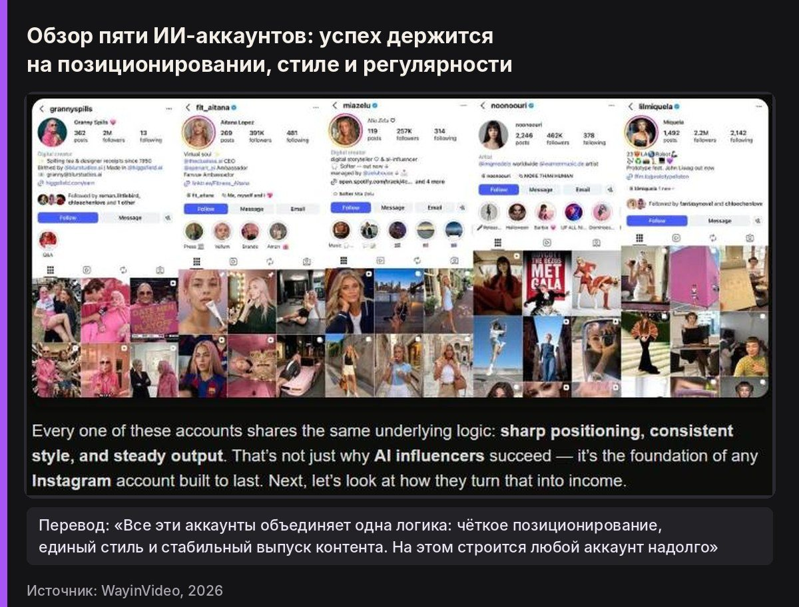
Скажу честно и про внутренний конфликт. Контент-завод не выдаёт в каждом посте концентрат уникальной экспертизы. Но такой концентрат и у живых экспертов случается редко. А в соцсетях сейчас большая конкуренция за внимание, и в эту борьбу важно включиться. Завод помогает пробиться через конкуренцию, а самые сильные мысли вы всё равно публикуете сами.
Что умеет контент-завод сегодня
Карусели
Карусели — основа завода. Тексты для них пишет нейросеть, а контент-план на месяц собирается за вечер. Можно брать трендовые примеры и делать в их логике свои посты. Мои карусели можно посмотреть в кейсах на сайте. А можно купить готового ИИ-агента: он сам распаковывается и дальше делает карусели в большом, практически неограниченном количестве.
Рилсы
Рилсы бывают очень разные. Самые простые в производстве — текстовые: заголовок поверх реального фонового видео плюс монтаж. Их можно выпускать часто. На таких коротких роликах по 10 секунд я качнула свой YouTube: подписчики пришли только с них. И результат мог быть ещё лучше.
ИИ-аватары для видео и рилс
Дальше — аватары. Вокруг них много хейта: мол, использовать аватара плохо. Но опыт рынка показывает обратное. Цифровой аватар эксперта — его копия, которая выпускает рилсы, пока сам эксперт работает с клиентами.
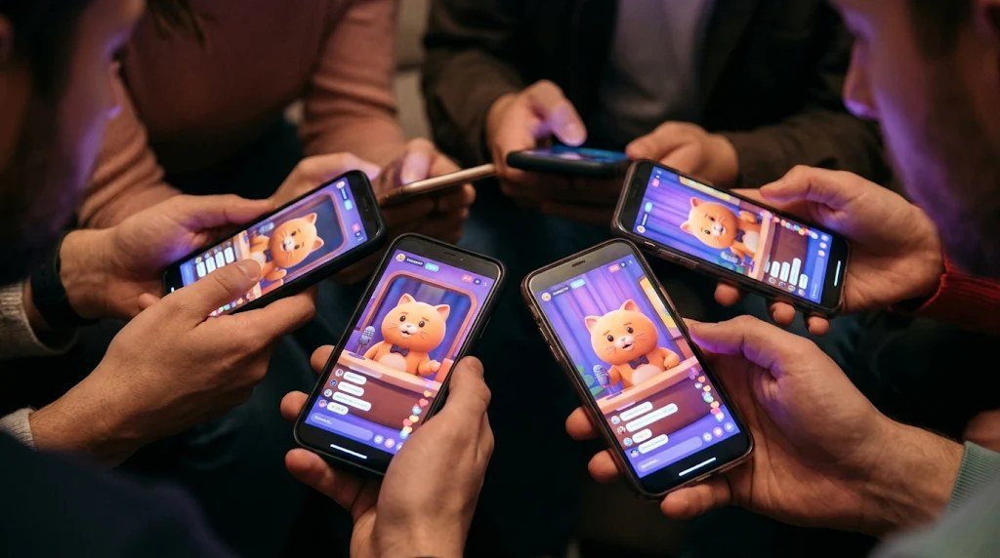
А на американском рынке пошли ещё дальше: там работают полностью вымышленные герои. ИИ-бабушка Granny Spills от нью-йоркской студии Blur Studios за первые недели собрала 400 тысяч подписчиков в TikTok и миллион в Instagram, а за ними пришли рекламные контракты. ИИ-сериал Fruit Love Island, реалити-шоу про фрукты, набрал 300 миллионов просмотров за девять дней. Люди смотрят таких героев как сериал, а деньги приходят чаще всего через рекламу продуктов.
Вот как эти аккаунты выглядят прямо сейчас — скриншоты из Instagram и TikTok, ноябрь 2026
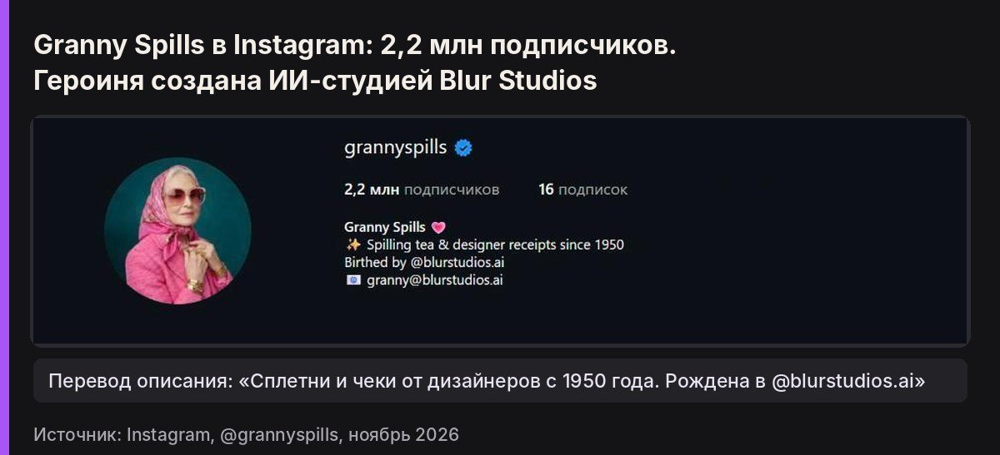
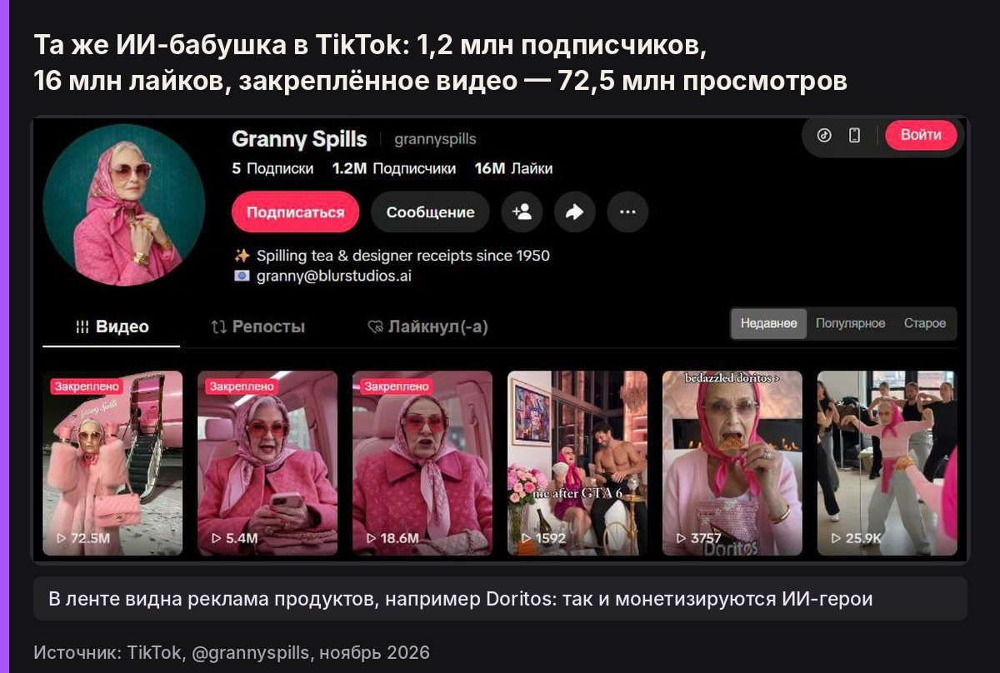
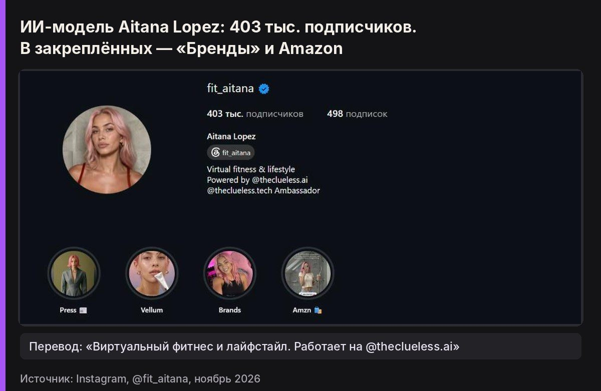
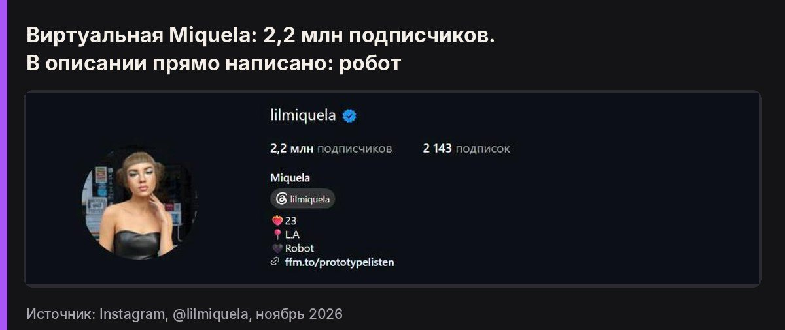
И это не единичные истории
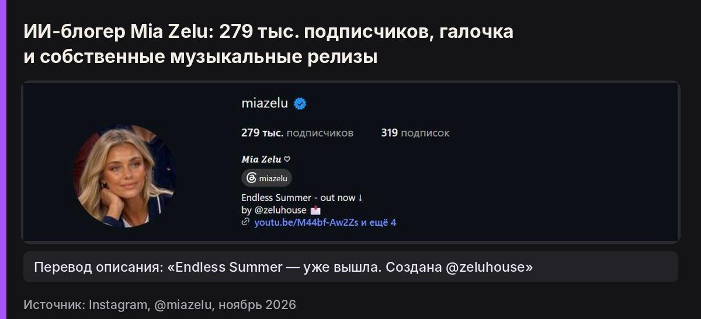
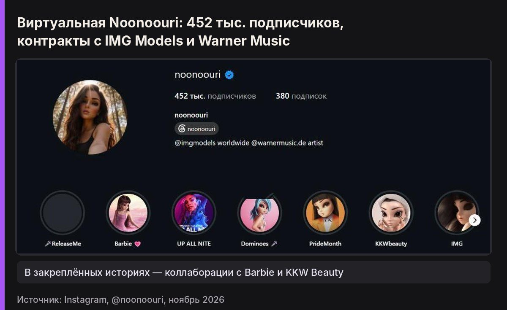
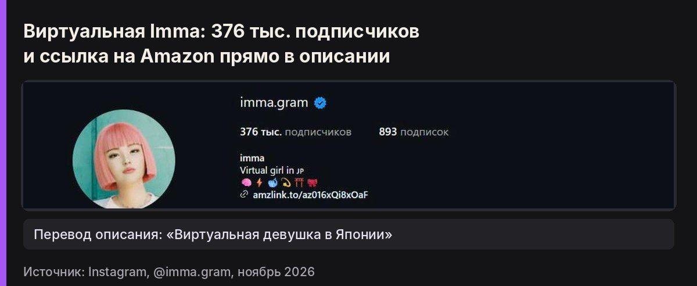
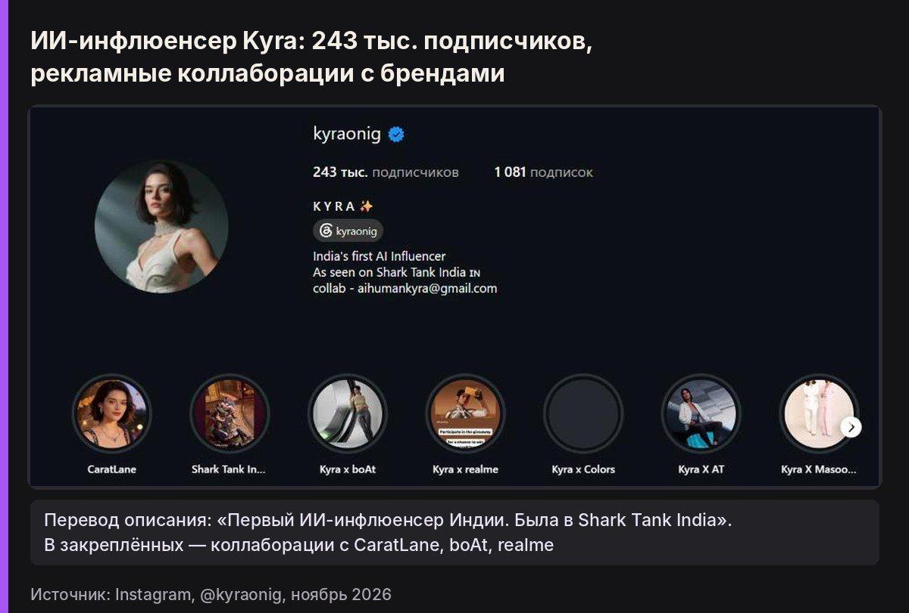
На англоязычном рынке ИИ-инфлюенсеров уже составляют рейтинги, как для обычных блогеров.
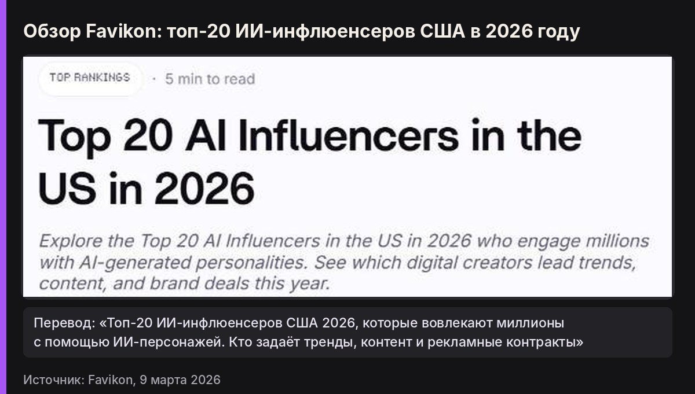
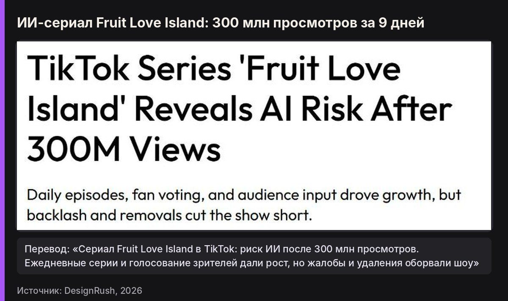
Риски тоже есть, о них надо знать. TikTok отключил Granny Spills монетизацию за «неоригинальный контент», хотя в Instagram она продолжила расти. А Fruit Love Island оборвался после массовых жалоб: удалили 12 серий из 22. Вымышленный герой — сильный инструмент, но только с оглядкой на правила площадок.
Отрицать этот инструмент сейчас — как в Средние века отрицать научные открытия. Надо смотреть вперёд и внедрять его в своё продвижение, чтобы набирать социальный капитал: подписчиков и заинтересованную базу.
Цифры, которые сложно спорить
больше лайков, комментариев и репостов при регулярных публикациях
Buffer, 100 000+ аккаунтовподписчиков в Instagram у ИИ-бабушки за первые недели
TIME, Granny Spillsпросмотров у ИИ-сериала за 9 дней
DesignRush, Fruit Love Islandединиц контента в месяц выпускает мой завод на 5 площадок
мой опытКак устроен мой контент-завод на ИИ
У меня четыре цеха. Если выкинуть любой, завод либо молчит, либо выдаёт мусор.
- Смыслы. Я не придумываю темы из головы. Я смотрю, что уже залетело у топовых авторов в нише, и беру их хуки и структуру. Так завод ставит на то, что уже сработало, а не на удачу.
- Мозги на Claude. Под каждую нишу свой проект: отдельно психология, отдельно маркетинг. И ещё один проект — база навыков и памяти: там правила, как писать карусель, ветку, описание к рилс. Claude не забывает контекст и пишет не «вообще», а голосом конкретного аккаунта.
- Производство. Карусели собираются по готовым шаблонам оформления. Рилс для клиентов я делаю без съёмок: цифровой аватар эксперта плюс монтаж. Эксперту не нужно каждый день становиться перед камерой.
- Выкладка. Автопостинг через Outstand и мою собственную программу, которая живёт на сервере и работает, пока я сплю. Один и тот же рилс уходит на YouTube, в Pinterest и на страницу в Facebook, каждая площадка получает своё описание и своё время.
Как контент проходит через мой завод
Итог: около 420 единиц контента в месяц на пять площадок.
Итог: около 420 единиц контента в месяц на пять площадок. Это тот же подход, на котором я вырастила с нуля два своих Instagram-аккаунта до 150 тысяч подписчиков каждый.
Сколько можно выкладывать в день, чтобы не словить бан
ИИ может наделать сто роликов за ночь. Проблема не в производстве, а в том, сколько площадка готова принять. Вот лимиты, которые я вывела на своих аккаунтах. Это не официальные правила, а мой опыт.
Сколько можно выкладывать в день, чтобы не словить бан
По моему опыту на своих аккаунтах. Красная линия — дальше начинаются проблемы
Завод должен не выпускать «сколько получится», а раскладывать выкладку под лимит каждой площадки.
Отсюда главное правило: завод должен делать не «как можно больше», а раскладывать выкладку по лимитам каждой площадки и по времени. И не повторять одни и те же хуки: повторы площадки тоже замечают.
Контент-завод на Claude или на n8n
Это самый частый вопрос, и на него часто отвечают неправильно. n8n — это конструктор автоматизаций: он соединяет сервисы и передаёт данные по цепочке. Сам по себе он не пишет и не думает, ему всё равно нужна нейросеть внутри. Claude — это и есть нейросеть, которая пишет, помнит правила и сама пишет код для выкладки.
| n8n | Claude | |
|---|---|---|
| Что это | конструктор цепочек из блоков | нейросеть с проектами, памятью и навыками |
| Качество текста | зависит от подключённой нейросети и промта | пишет голосом аккаунта по сохранённым правилам |
| Когда площадка поменяла правила | пересобирать цепочку вручную | описать словами, Claude перепишет сам |
| Кому подходит | тем, кто любит техническую настройку | тем, кому важны смыслы и скорость правок |
Я выбрала Claude, потому что у меня бутылочное горлышко не в передаче данных, а в смыслах. Текст, который звучит как ИИ, площадка не двигает, сколько бы его ни было.
Кстати, создатели той самой ИИ-бабушки Granny Spills работают так же. По данным TIME, они обучают Claude на своих прошлых видео, он придумывает новые идеи и сценарии, и один ролик делается за 5–10 минут вместо съёмок и монтажа.
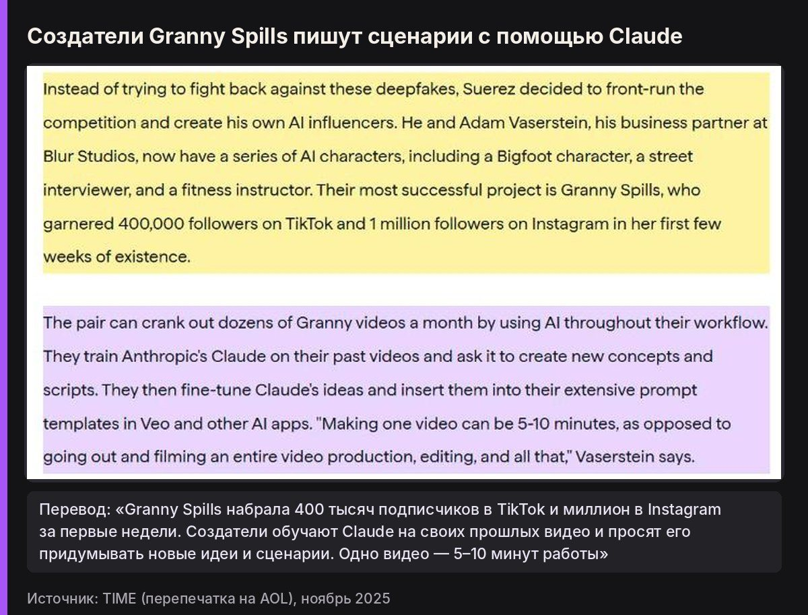
Сколько стоит контент-завод под ключ и ведение соцсетей
Полный пакет — пять площадок и около 420 единиц контента в месяц — в России стоит от 120 000 ₽ в месяц. В Алматы старт от 300 000 ₸ в месяц, есть и пакеты полегче по объёму.
Итоговая цена зависит от того, какие нужны рилс и карусели: с цифровым аватаром или без, сколько площадок, какой сложности монтаж.
И честно про дешёвые предложения. Если вам обещают полный завод на пять площадок за 60 000 ₽, там почти наверняка цепочка «нейросеть пишет — бот выкладывает» без смыслов и без контроля лимитов. Такой завод быстро начинает производить тишину.
Контент-завод своими руками: где ломается
Собрать завод самому можно. Я свой собирала сама и пересобирала не один раз. Вот где чаще всего всё и ломается:
- Выкладка без лимитов. Завод сделал 30 роликов и выложил их за день. Аккаунт в бане или без охватов.
- Темы из головы нейросети. ИИ сам придумывает, о чём писать, и пишет то же, что у всех. Нужна база смыслов, которые уже сработали.
- Один проект на всё. Психология и маркетинг в одном чате смешиваются, и карусель про отношения вдруг звучит как реклама сервиса. Под каждую нишу — свой проект.
- Одни и те же хуки. Завод по кругу гоняет пять удачных заходов, и через месяц их уже никто не видит.
- Никто не смотрит на цифры. Завод работает, но никто не проверяет, что залетает, а что нет, и не добавляет удачное в базу смыслов.
Своими руками выгодно, если у вас одна-две площадки и есть время разбираться. Под ключ выгоднее, когда нужно сразу три и больше площадок и ваше время стоит дороже, чем сама настройка.
Частые вопросы
Что такое контент-завод простыми словами?Система, которая каждый день делает контент и сама выкладывает его во все ваши соцсети. Смыслы, нейросеть и автопостинг в одной связке.
Можно ли сделать контент-завод на n8n самому?Можно, если вам интересна техническая сторона. Но n8n только соединяет сервисы: тексты всё равно пишет нейросеть, и качество зависит от смыслов, которые вы ей дадите.
Сколько стоит контент-завод под ключ?Полный пакет на пять площадок — от 120 000 ₽ в месяц в России и от 300 000 ₸ в Алматы. Цена зависит от требований к рилс и каруселям.
Нужно ли эксперту сниматься для рилс?Нет. Рилс можно делать на цифровом аватаре эксперта с монтажом.
Сколько постов в день можно выкладывать?По моему опыту: новый Threads — до 5 веток, новый Instagram — до 6 рилс, TikTok и YouTube — до 5 видео, а YouTube иногда режет до трёх.
Чем контент-завод отличается от обычного ведения соцсетей?Объёмом и регулярностью. Смм-щик делает несколько постов в неделю руками, а завод с нейросетью и автопостингом выдаёт сотни единиц в месяц на несколько площадок сразу.
Подходит ли контент-завод для бренда или бизнеса?Да. Логика та же, что и для эксперта: смыслы, нейросеть, выкладка по лимитам. Меняются темы, форматы и голос бренда.
Какая нейросеть лучше для соцсетей?Я работаю на Claude: он держит контекст, пишет посты и сценарии голосом аккаунта и сам пишет код для автопостинга. Для видео и рилс добавляются сервисы для ИИ-аватаров и монтажа.
Хотите свой контент-завод?
Если хотите сделать подобное, приходите на консультацию. Обсудим, какой формат подходит именно вам: карусели, рилсы, ИИ-аватар или всё вместе. Работаю с экспертами и брендами в Алматы, по Казахстану и России онлайн. А как я собираю завод и какие агенты в нём работают, показываю в своём Telegram-канале.
Читать Telegram-канал → Мои кейсыИсточники
- TIME: Granny Spills — 400 тыс. в TikTok и 1 млн в Instagram, сценарии в Claude
- Granny Spills: монетизация и отключение в TikTok
- DesignRush: Fruit Love Island — 300 млн просмотров за 9 дней
- Social Media Today: Адам Моссери о сигналах ранжирования
- Buffer: исследование о регулярных публикациях
- Favikon: топ-20 ИИ-инфлюенсеров США 2026
- WayinVideo: ИИ-инфлюенсеры в Instagram 2026